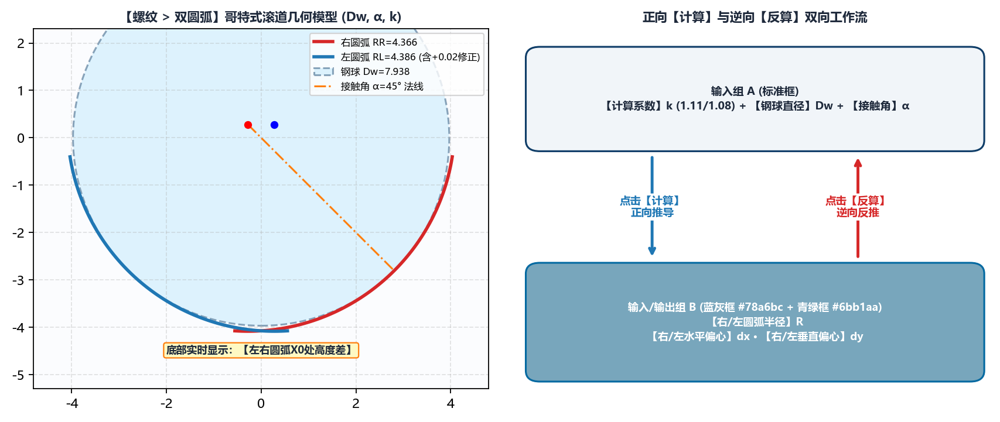

5.2 双圆弧（哥特式）螺纹
绘图工具 -> 螺纹 -> 双圆弧 用于滚珠丝杠螺母与丝杠轴的哥特式（Gothic Arch）双圆弧滚道建模，提供正向 计算 与逆向 反算 双向求解。
几何结构与参数体系

每一侧圆弧由圆弧半径 R、水平偏心 dx（相对中心 X = 0）和垂直偏心 dy（相对中径 Y = 0）唯一确定。
正向 计算 模式
已知钢球直径与接触角时，自动求解半径与偏心：
- 填写顶部 3 项（白底框）：
计算系数（k）：下拉预设1.11、1.08，也支持直接在框内手动输入任意比值系数（如1.06、1.045）；钢球直径（Dw，mm）：精密钢球公称直径（如3.175、7.938）；接触角（α₀，°）：标准值通常为45。
- 点击
计算按钮： 系统按以下公式自动计算并填入中部 6 个蓝灰框（#78a6bc）：
- 现场公差微调：
- 每个蓝灰框右侧配有 青绿微调框（
#6bb1aa）（默认0）； - 生成齿形时自动将蓝灰理论值与青绿微调值叠加，无需重算理论参数。
- 每个蓝灰框右侧配有 青绿微调框（
逆向 反算 模式
当图纸直接给出圆弧半径与圆心偏心（如微型螺母 BNS-0802-M：R = 0.636 mm，dx = 0.0222 mm，dy = 0.0284 mm）：
- 在 6 个 蓝灰框（
#78a6bc） 直接输入右/左圆弧半径、右/左水平偏心、右/左垂直偏心； - 点击
反算按钮：系统逆推等效钢球直径与接触角并回填顶部框以便校核。
直径、螺距与底部高度差检查
直径信息联动标签：- 输入
工件中径； - 当
基本参数 -> 工件类型=内螺纹时第 2 项显示工件大径（> 中径）；为外螺纹时显示工件小径（< 中径）。
- 输入
螺距信息：填写单牙工件螺距与工件头数（如双头BNS-5250-2S填25与2）。左右圆弧X0处高度差:校验：- 点击左下角
生成齿形文件后底部实时显示两圆弧在X = 0处的高度差； - 对称微调时显示
0.0 mm；非对称调整后若差值 >0.005 mm，请在画布放大核查底角衔接是否平滑。
- 点击左下角